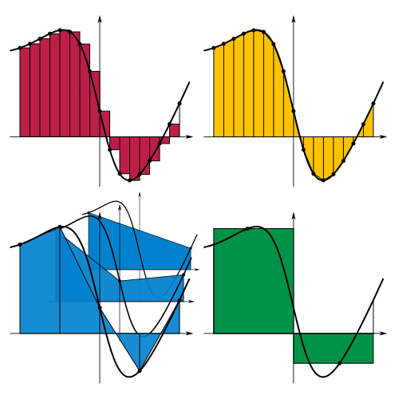

Day 10 - Integrating EOMs Numerically#

Announcements#
PERMANENT CHANGE: OFFICE HOURS
DC Office hours 10:00-12:00 on Fridays (No Monday office hours)
CHANGES THIS WEEK (DC has a conflict):
Office Hrs on Zoom today 16:00-17:00 https://msu.zoom.us/j/92295821308
15:00-16:00 on Friday -> 14:00-15:00 on Friday
Seminars this week#
Astronomy Seminar, Wednesday Feb 5th at 1:30pm in 1400 BPS
Lia Corrales, Univ. of Michigan, The cosmic journey of the elements, from dust to life
Physics & Astronomy Colloquium, Thursday Feb 6th at 3:30pm in 1415 BPS
Andreas Jung, Purdue University, Entangled Titans: unraveling the mysteries of Quantum Mechanics with top quarks
Reminder: email me your extra credit seminar write-ups
Goals for this week#
Establish a model for drag forces
Develop an understanding of the process for modeling forces
Produce equations of motion that can be investigated
Start probing the behavior of these systems with math and computing
Model-to-EOM Pipeline for Classical Mechanics#
✅ Develop conceptual description of the system; make justifiable assumptions
✅ Using a framework of physics (i.e., Newton’s Laws, Lagrangian Dynamics), develop a mathematical model of the system
✅ Produce the equations of motion (EOM) by following the framework (i.e., ordinary differential equations)
😵 Solve for trajectories of the system (e.g., \(x(t)\), \(v(t)\), \(v(x)\))
Most EOMs are nonlinear#
We need approximate methods to produce trajectories#
Clicker Question 6-5#
For the system of Quadratic Drag in 1D, we found a solution for the velocity as a function of time, with \(v = 0\) at \(t = 0\).
where \(v_{term} = \sqrt{mg/c}\). What happens when \(t \rightarrow \infty\)?
The object stops moving.
The object travels at a constant velocity.
The object travels at an increasing velocity.
The object travels at a decreasing velocity.
I’m not sure.
Clicker Question 6-6#
For the gravitational interaction, I want to compute the force acting on body B, located at \(\vec{r}_B\), by body A, located at \(\vec{r}_A\).
The gravitational force is given by:
What is the appropriate form of \(\vec{r}\)?
\(\vec{r} = \vec{r}_A - \vec{r}_B\)
\(\vec{r} = \vec{r}_B - \vec{r}_A\)
Either is ok
Clicker Question 6-7#
We found that the equation of motion for the spring-mass system was:
Your friends have proposed the following general solutions:
How many of them are correct? (1) Only one (2) Two (3) Three (4) Four (5) All of them